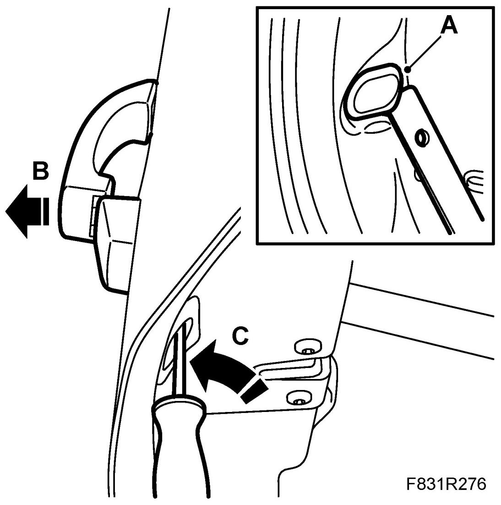
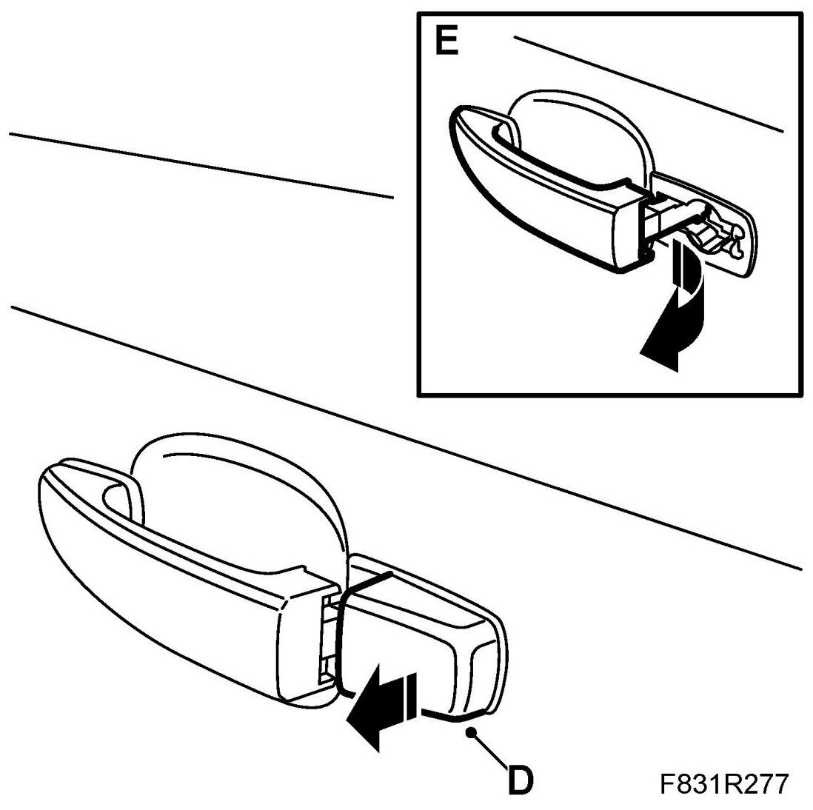
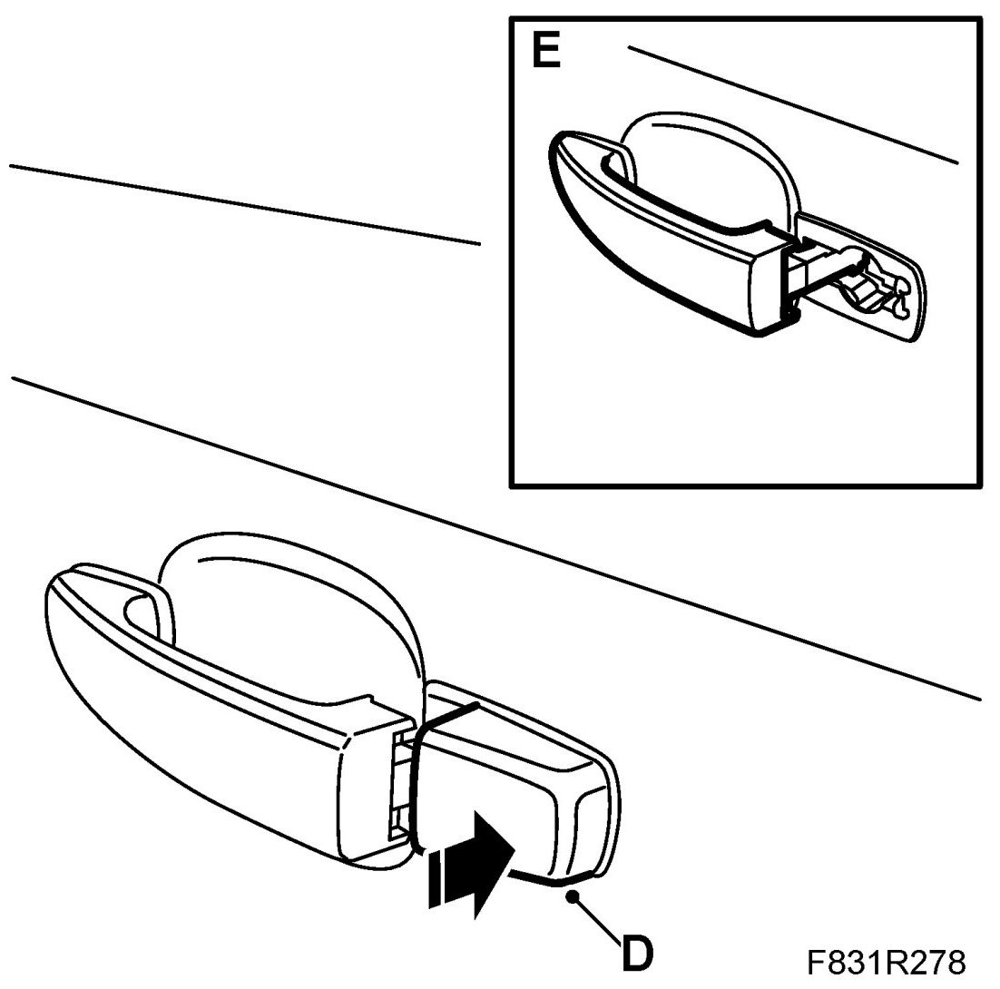
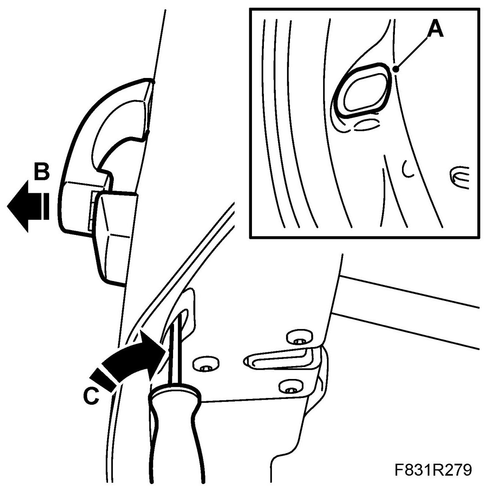

Rear Door Handle
Rear Door Handle
To remove
1. Remove the door handle.
- Remove the cover (A) using 82 93 474 Removal tool

- Hold the opening handle (B) in its outer position and unscrew the bolt (C) to the stop position.
- Loosen the rear part (D) of the handle.

- Remove the front part (E) by unhooking the front edge out of the handle.
To fit
1. Fit the door handle.
- Fit the front part (E) by hooking the front edge of the handle into place.

- Fit the rear part (D) of the handle.
2. Hold the opening handle (B) in its outer position and screw in the bolt (C) to the stop position.

3. Fit the cover (A).